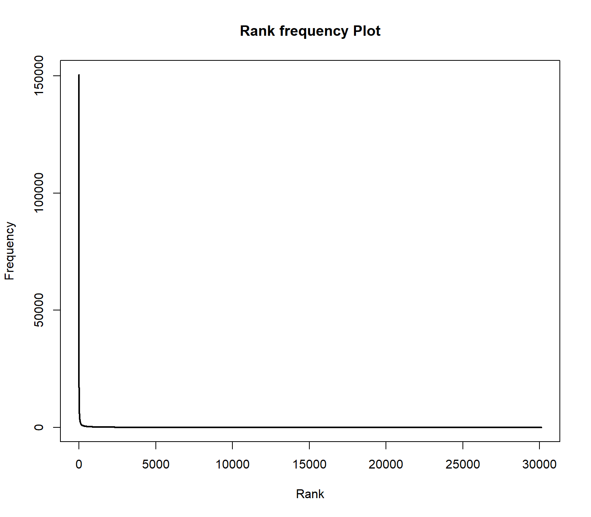
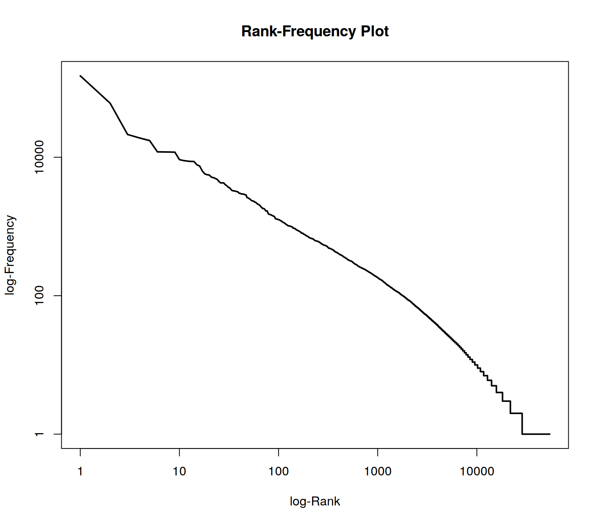
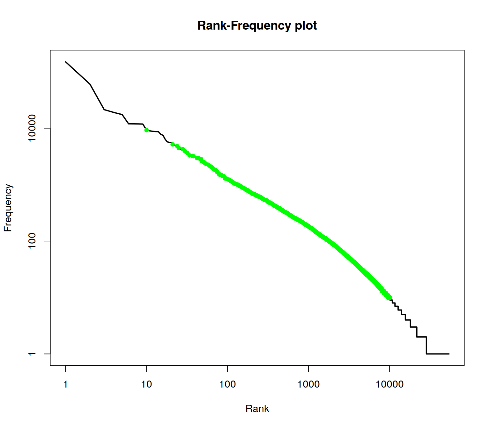

In this tutorial, we demonstrate how to read text data in R, tokenize texts and create a document-term matrix.
Set global options at the beginning.
# Global options
options(stringsAsFactors = FALSE)The read.csv command reads a CSV (Comma Separated Value) file from disk. Such files represent a table whose rows are represented by single lines in the files and columns are marked by a separator character within lines. Arguments of the command can be set to specify whether the CSV file contains a line with column names (header = TRUE or FALSE) and the character set.
We read a CSV containing 231 “State of the Union” addresses of the presidents of the United States. The texts are freely available from http://stateoftheunion.onetwothree.net. Our CSV file has the format: "id";"speech_type";"president";"date";"text". Text is encapsualted into quotes ("). Since sepration is marked by ; instead of ,, we need to specify the separator char.
# read csv into a data.frame
textdata <- read.csv("data/sotu.csv", header = TRUE, sep = ";", encoding = "UTF-8")The texts are now available in a data frame together with some metadata (ID, speech type, president). Let us first see how many documents and metadata we have read.
# dimensions of the data frame
dim(textdata)## [1] 231 5# column names of text and metadata
colnames(textdata)## [1] "doc_id" "speech_type" "president" "date" "text"How many speeches do we have per president? This can easily be counted with the command table, which can be used to create a cross table of different values. If we apply it to a column, e.g. president of our data frame, we get the counts of the unique president values.
table(textdata[, "president"])##
## Abraham Lincoln Andrew Jackson Andrew Johnson
## 4 8 4
## Barack Obama Benjamin Harrison Calvin Coolidge
## 8 4 6
## Chester A. Arthur Donald J. Trump Dwight D. Eisenhower
## 4 1 9
## Franklin D. Roosevelt Franklin Pierce George H.W. Bush
## 12 4 4Now we want to transfer the loaded text source into a corpus object of the quanteda-package. First we load the package.
require(quanteda)A corpus object is created with the corpus command. As parameter, the command gets the fulltext of the documents. In our case, this is the text-column of the textdata-data.frame. The docnames-parameter of the corpus function defines which unique identifier is given to each text example in the input (values from other columns of the data frame could be imported as metadata to each document but we will not use them in this tutorial).
corpus <- corpus(textdata$text, docnames = textdata$doc_id)
# have a look on the new corpus object
summary(corpus)## Corpus consisting of 231 documents, showing 100 documents:
##
## Text Types Tokens Sentences
## 1 460 1170 24
## 2 593 1504 40
## 3 816 2477 60
## 4 772 2288 61
## 5 803 2122 56
## 6 1137 3198 79
## 7 821 2155 53
## 8 1005 3096 78
## 9 732 2239 58
## 10 833 2368 54
## 11 597 1624 35
## 12 562 1489 40
## 13 1098 3493 90
## 14 823 2398 62
## 15 837 2463 48
## 16 746 2287 50
## 17 984 3171 78
## 18 969 3114 76
## 19 858 2606 62
## 20 956 2922 72
## 21 699 1950 40
## 22 893 2615 61
## 23 829 2439 46
## 24 1126 3496 87
## 25 1074 3521 67
## 26 831 2282 50
## 27 1050 3390 59
## 28 1086 3615 72
## 29 1222 4815 122
## 30 1243 4729 114
## 31 1196 5091 131
## 32 1070 3767 84
## 33 1319 6323 149
## 34 1265 5145 117
## 35 1593 6927 184
## 36 1750 9179 247
## 37 2147 9809 212
## 38 1817 8409 172
## 39 1818 7586 165
## 40 1830 7945 195
## 41 2356 11418 299
## 42 2767 16297 391
## 43 1792 7719 165
## 44 1916 8480 199
## 45 1741 8497 181
## 46 2581 14463 318
## 47 2240 11573 239
## 48 2421 13223 294
## 49 2368 12355 281
## 50 2388 12439 264
## 51 2638 14512 341
## 52 2153 9715 182
## 53 2002 8837 197
## 54 2037 9035 205
## 55 1958 8645 193
## 56 2115 10026 267
## 57 2689 17529 446
## 58 2782 19861 476
## 59 2687 17790 440
## 60 3289 23296 597
## 61 1863 8223 210
## 62 2061 9008 232
## 63 2696 14332 351
## 64 2379 10712 284
## 65 2292 10379 231
## 66 2427 10990 267
## 67 2458 12583 274
## 68 2325 11392 255
## 69 2575 14932 406
## 70 2912 17830 518
## 71 2453 13598 396
## 72 2638 15376 484
## 73 1872 7661 213
## 74 2061 9390 319
## 75 1719 6645 200
## 76 1755 6587 207
## 77 2153 10090 276
## 78 1871 7797 202
## 79 2668 13177 381
## 80 2352 10863 281
## 81 1924 8488 247
## 82 2173 9587 266
## 83 1758 7020 211
## 84 1162 4338 112
## 85 2377 11013 292
## 86 2143 10100 273
## 87 2574 13408 347
## 88 1787 7438 192
## 89 1965 8707 218
## 90 2040 8643 237
## 91 2443 12647 313
## 92 1768 7215 191
## 93 1351 4098 118
## 94 1062 3299 92
## 95 1315 4082 108
## 96 2355 9670 288
## 97 3812 21381 559
## 98 3110 16359 416
## 99 1394 5723 123
## 100 2402 9798 239
##
## Source: C:/Users/aniekler/Desktop/tm4ss.github.io/* on x86-64 by aniekler
## Created: Tue Jul 03 16:13:53 2018
## Notes:A corpus is an extension of R list objects. With the [[]] brackets, we can access single list elements, here documents, within a corpus.
# getting a single text documents content
as.character(texts(corpus)[1])## [1] "Fellow-Citizens of the Senate and House of Representatives:\n\nI embrace with great satisfaction the opportunity which now..."Success!!! We now have 231 speeches for further analysis available in a convenient tm corpus object!
A further aim of this exercise is to learn about statistical characteristics of text data. At the moment, our texts are represented as long character strings wrapped in document objects of a corpus. To analyze which word forms the texts contain, they must be tokenized. This means that all the words in the texts need to be identified and separated. Only in this way is it possible to count the frequency of individual word forms. A word form is also called “type”. The occurrence of a type in a text is a “token”.
For text mining, text are further transformed into a numeric representation. The basic idea is that the texts can be represented as statistics about the contained words (or other content fragments such as sequences of two words). The list of every distinct word form in the entire corpus forms the vocabulary of a corpus. For each document, we can count how often each word of the vocabulary occurs in it. By this, we get a term frequency vector for each document. The dimensionality of this term vector corresponds to the size of the vocabulary. Hence, the word vectors have the same form for each document in a corpus. Consequently, multiple term vectors representing different documents can be combined into a matrix. This data structure is called document-term matrix (DTM).
The function dfm (Document-Feature-Matrix; Quanteda treats words as features of a text based dataset) of the quanteda package creates such a DTM. If this command is called without further parameters, the individual word forms are identified by using the tokenizer of quanteda as the word separator. Quanteda has 3 differnent word separation methods. The standard and smartest way uses word boudaries and punctuations to separate the text sources. The other methods rely on whitespace information an work significantly faster but not as accurate.
# Create a DTM (may take a while)
DTM <- dfm(corpus)
# Show some information
DTM## Document-feature matrix of: 231 documents, 30,112 features (94.2% sparse).# Dimensionality of the DTM
dim(DTM)## [1] 231 30112The dimensions of the DTM, 231 rows and 30112 columns, match the number of documents in the corpus and the number of different word forms (types) of the vocabulary.
A first impression of text statistics we can get from a word list. Such a word list represents the frequency counts of all words in all documents. We can get that information easily from the DTM by summing all of its column vectors.
A so-called sparse matrix data structure is used for the document term matrix in the quanteda package (quanteda inherits the Matrix package for sparse matrices). Since most entries in a document term vector are 0, it would be very inefficient to actually store all these values. A sparse data structure instead stores only those values of a vector/matrix different from zero. The Matrix package provides arithmetic operations on sparse DTMs.
# sum columns for word counts
freqs <- colSums(DTM)
# get vocabulary vector
words <- colnames(DTM)
# combine words and their frequencies in a data frame
wordlist <- data.frame(words, freqs)
# re-order the wordlist by decreasing frequency
wordIndexes <- order(wordlist[, "freqs"], decreasing = TRUE)
wordlist <- wordlist[wordIndexes, ]
# show the most frequent words
head(wordlist, 25)## words freqs
## the the 150528
## of of 97139
## , , 84764
## . . 63198
## and and 61182
## to to 60968
## in in 38782
## a a 28184
## that that 21848
## for for 19083
## be be 18740
## our our 17479
## is is 17075
## it it 15271
## by by 15034
## which which 12349
## as as 12222
## we we 12144
## this this 12141
## have have 12088
## with with 12058
## will will 9551
## on on 9453
## i i 9304
## has has 9065The words in this sorted list have a ranking depending on the position in this list. If the word ranks are plotted on the x axis and all frequencies on the y axis, then the Zipf distribution is obtained. This is a typical property of language data and its distribution is similar for all languages.
plot(wordlist$freqs , type = "l", lwd=2, main = "Rank frequency Plot", xlab="Rank", ylab ="Frequency")
The distribution follows an extreme power law distribution (very few words occur very often, very many words occur very rare). The Zipf law says that the frequency of a word is reciprocal to its rank (1 / r). To make the plot more readable, the axes can be logarithmized.
plot(wordlist$freqs , type = "l", log="xy", lwd=2, main = "Rank-Frequency Plot", xlab="log-Rank", ylab ="log-Frequency")
In the plot, two extreme ranges can be determined. Words in ranks between ca. 10,000 and 30112 can be observed only 10 times or less. Words below rank 100 can be oberved more than 1000 times in the documents. The goal of text mining is to automatically find structures in documents. Both mentioned extreme ranges of the vocabulary often are not suitable for this. Words which occur rarely, on very few documents, and words which occur extremely often, in almost every document, do not contribute much to the meaning of a text.
Hence, ignoring very rare / frequent words has many advantages:
To illustrate the range of ranks best to be used for analysis, we augment information in the rank frequency plot. First, we mark so-called stop words. These are words of a language that normally do not contribute to semantic information about a text. In addition, all words in the word list are identified which occur less than 10 times.
The %in% operator can be used to compare which elements of the first vector are contained in the second vector. At this point, we compare the words in the word list with a loaded stopword list (retrieved by the function stopwords of the tm package) . The result of the %in% operator is a boolean vector which contains TRUE or FALSE values.
A boolean value (or a vector of boolean values) can be inverted with the ! operator (TRUE gets FALSE and vice versa). The which command returns the indices of entries in a boolean vector which contain the value TRUE.
We also compute indices of words, which occur less than 10 times. With a union set operation, we combine both index lists. With a setdiff operation, we reduce a vector of all indices (the sequence 1:nrow(wordlist)) by removing the stopword indices and the low freuent word indices.
With the command “lines” the range of the remining indices can be drawn into the plot.
plot(wordlist$freqs, type = "l", log="xy",lwd=2, main = "Rank-Frequency plot", xlab="Rank", ylab = "Frequency")
englishStopwords <- stopwords("en")
stopwords_idx <- which(wordlist$words %in% englishStopwords)
low_frequent_idx <- which(wordlist$freqs < 10)
insignificant_idx <- union(stopwords_idx, low_frequent_idx)
meaningful_range_idx <- setdiff(1:nrow(wordlist), insignificant_idx)
lines(meaningful_range_idx, wordlist$freqs[meaningful_range_idx], col = "green", lwd=2, type="p", pch=20)
The green range marks the range of meaningful terms for the collection.
## words freqs
## , , 84764
## . . 63198
## - - 7812
## government government 6877
## states states 6475
## congress congress 4996
## united united 4819
## ; ; 4471
## can can 4345
## people people 3979
## upon upon 3956
## year year 3823
## $ $ 3644
## may may 3407
## country country 3360
## must must 3305
## great great 3256
## made made 3143
## now now 3079
## public public 3073
## new new 2976
## time time 2846
## war war 2759
## one one 2668
## last last 2614## [1] 0.393564## [1] 0.01545572017, Andreas Niekler and Gregor Wiedemann. GPLv3. tm4ss.github.io